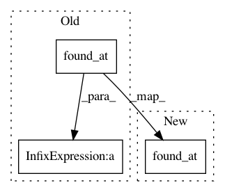

67f0fec6d97c83b8e26957281b976c2c54e43374,w3af/plugins/audit/buffer_overflow.py,buffer_overflow,_analyze_result,#buffer_overflow#Any#Any#,139
Before Change
if self._has_bug(mutant):
continue
desc = "A potential buffer overflow (accurate detection is" \
" hard...) was found at: %s" % mutant.found_at()
v = Vuln.from_mutant("Buffer overflow vulnerability", desc,
severity.MEDIUM, response.id,
self.get_name(), mutant)
After Change
desc = ("A potential buffer overflow (accurate detection is"
" hard) was found at: %s")
desc %= mutant.found_at()
v = Vuln.from_mutant("Buffer overflow vulnerability", desc,
severity.MEDIUM, response.id,
self.get_name(), mutant)
In pattern: SUPERPATTERN
Frequency: 4
Non-data size: 3
Instances
Project Name: andresriancho/w3af
Commit Name: 67f0fec6d97c83b8e26957281b976c2c54e43374
Time: 2017-11-29
Author: andres.riancho@gmail.com
File Name: w3af/plugins/audit/buffer_overflow.py
Class Name: buffer_overflow
Method Name: _analyze_result
Project Name: andresriancho/w3af
Commit Name: 67f0fec6d97c83b8e26957281b976c2c54e43374
Time: 2017-11-29
Author: andres.riancho@gmail.com
File Name: w3af/plugins/audit/preg_replace.py
Class Name: preg_replace
Method Name: _analyze_result
Project Name: andresriancho/w3af
Commit Name: c08c98415395b76371581432be55381f0f6e2b40
Time: 2018-01-09
Author: andres.riancho@gmail.com
File Name: w3af/plugins/audit/format_string.py
Class Name: format_string
Method Name: _analyze_result
Project Name: andresriancho/w3af
Commit Name: 0a166a71556b462966fb99e48ae44416f87bdbf2
Time: 2018-02-06
Author: andres.riancho@gmail.com
File Name: w3af/core/controllers/sql_tools/blind_sqli_time_delay.py
Class Name: BlindSQLTimeDelay
Method Name: is_injectable